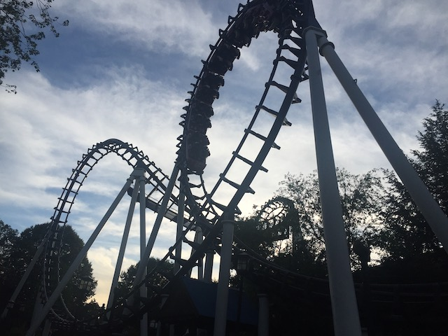
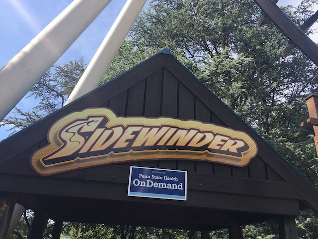

| |
Jolly Rancher Remix Review

We're here at Hersheypark to ride their Boomerang. But this is not a standard Boomerang. First off, there's the theme. Now when I last rode it, it didn't have all the Jolly Rancher theming. It was still Sidewinder. From seeing photos of it, the theme seems....interesting. I love coasters with wacky themes. This isn't the first coaster with a candy theme, but it seems to be the biggest (excluding Candymonium. But this one has a specific candy it's going after). And yeah. It has the fancy new trains, which really helps. Because when I first rode it with the old trains, it was a piece of sh*t and one of the worse Boomerangs. But now it's smooth as glass and a lot of fun (with the Jolly Rancher theming, I imagine it'll become the best Boomerang of all). So let's get in the fancy new trains, pull down the soft OTSRs, and away we go. Up the lift you go backwards. The view isn't that great, but that's OK. And then, you drop. The drop is really fun and you get some nice speed. However, once you pull up into the sky as you enter the cobra roll, and whala! No pain! The new trains have done their job, cause yeah. This part hurt back when it had the old trains. But now with the fancy new trains, it's actually fun. Then you go into a loop. The loop is fun and actually has some good Gs. Then you climb up the second spike. Climb up a little more, and then, you drop. Backwards you go. The loop is quite weird backwards. And then you go backwards into the cobra roll. You brace for pain, but it's not there. And finally, you glide into the station. This ride is proof that with some tender love and care, a Boomerang can actually be a decent ride. Still nothing to scream over, but I had fun on this ride, and with the Jolly Rancher makeover it got since my last visit, I actually plan on reriding this on my next Hersheypark visit. Seriously, the only other Boomerangs I can think of that's similar are the ones at Power Park and Carowinds. So yeah. Give it a ride if you're at Hersheypark and it has a short line. You may not think this means much, but it's one of the best Boomerangs on the planet.
7/10
Location: Hersheypark
Opened: 1991
Built by: Vekoma
Last Ridden: June 25, 2021
I have ridden this exact same ride at the following parks.
Carowinds
Elitch Gardens
Geauga Lake
Knotts Berry Farm
La Ronde
Lake Compounce
Power Park
Six Flags Discovory Kingdom
Six Flags Fiesta Texas
Six Flags Great Escape
Six Flags Mexico
Six Flags New England
Worlds of Fun
Sidewinder Photos




Home
|